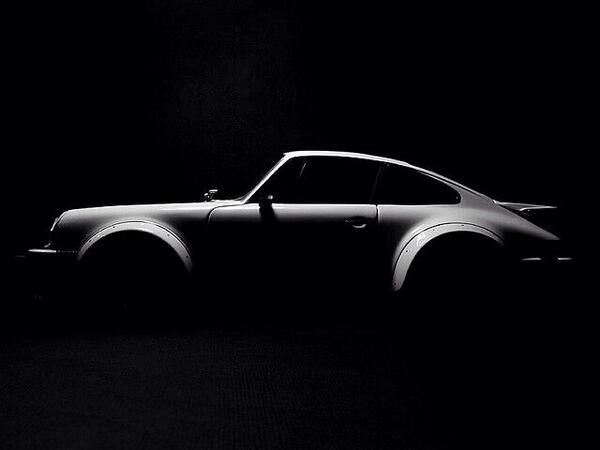
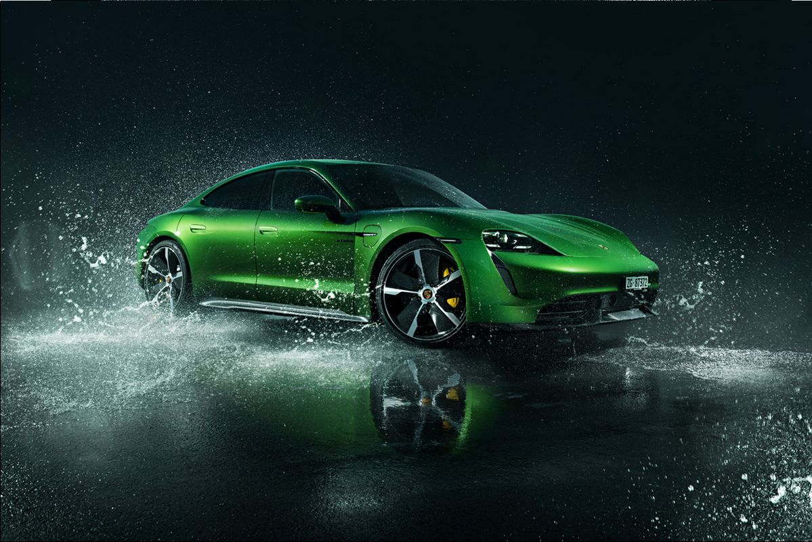
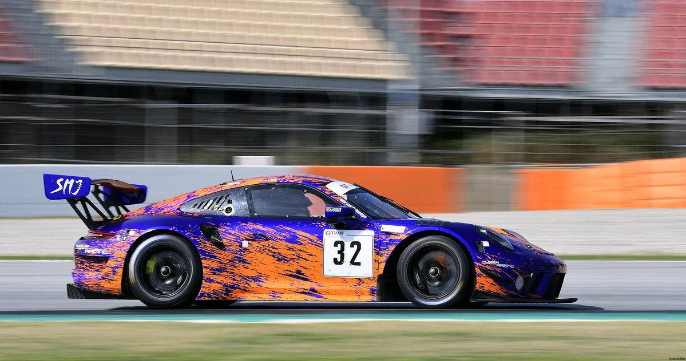
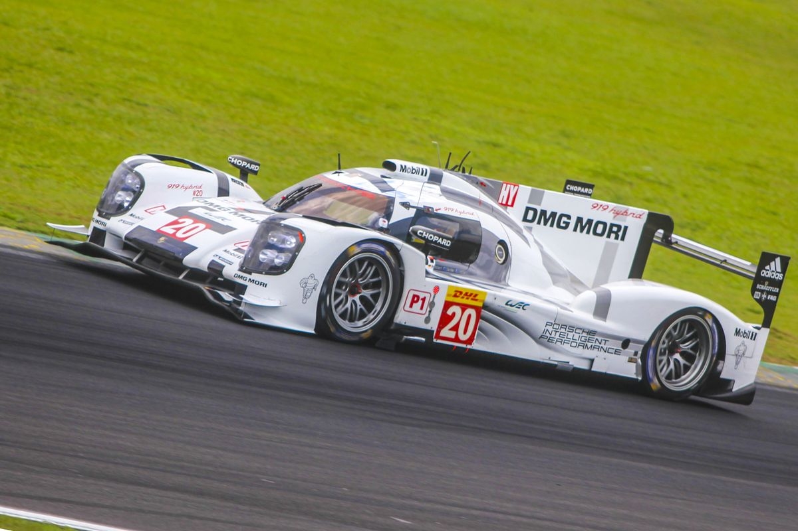

Porsche | Performance sem concessões
history_edu A evolução de uma marca que transformou o automóvel esportivoDa tradição das pistas aos esportivos de alta performance produzidos em Stuttgart, a Porsche construiu uma identidade baseada em engenharia, precisão e desempenho. Modelos como o 911 atravessaram gerações mantendo uma linguagem de design reconhecível, enquanto novas tecnologias ampliaram os limites de performance, eficiência e conectividade.
A trajetória contemporânea da Porsche combina o legado dos motores de combustão com uma estratégia cada vez mais voltada à eletrificação. O Taycan tornou-se um dos principais símbolos dessa transformação, enquanto novas gerações de veículos esportivos e SUVs continuam expandindo o portfólio da marca. O resultado é uma abordagem em que tradição e inovação convivem no mesmo projeto de engenharia.
whatshot Porsche | News
by: Gabriel AlãoPorsche mantém o 911 como referência entre os esportivos A evolução da família 911 combina a arquitetura tradicional do modelo com avanços em aerodinâmica, eletrônica embarcada, dinâmica veicular e eficiência. A estratégia da marca preserva a identidade do esportivo enquanto amplia suas possibilidades de uso e desempenho.
Taycan reforça a ofensiva elétrica da Porsche O esportivo elétrico tornou-se uma peça central na estratégia de eletrificação da marca. Com foco em desempenho, carregamento rápido e comportamento dinâmico, o Taycan procura demonstrar que a transição para propulsão elétrica também pode ser orientada pela engenharia esportiva.
Porsche amplia tecnologia híbrida em sua nova geração de esportivos A eletrificação híbrida passa a desempenhar papel importante em diferentes versões da linha Porsche. A combinação entre motor a combustão e assistência elétrica permite buscar maior resposta ao acelerador, eficiência e desempenho sem abandonar a experiência característica dos modelos da marca.
911 GT3 continua aproximando a tecnologia das pistas das estradas Com soluções derivadas do automobilismo, aerodinâmica cuidadosamente trabalhada e foco absoluto na dinâmica de condução, o 911 GT3 representa uma das interpretações mais radicais do conceito de esportivo homologado para as ruas.
Porsche trabalha para elevar eficiência sem abandonar a experiência de condução A engenharia da marca busca equilibrar redução de emissões, eletrificação e desempenho. Novas soluções de propulsão, gerenciamento eletrônico e recuperação de energia fazem parte de uma transformação que pretende preservar a personalidade dinâmica dos automóveis Porsche.
Design do Porsche 911 mantém uma das identidades mais reconhecíveis da indústria A evolução visual do 911 é marcada pela continuidade. Proporções, silhueta e elementos característicos permanecem reconhecíveis, enquanto detalhes de iluminação, aerodinâmica e tecnologia são atualizados para acompanhar cada nova geração.
|
 |
Porsche 911: tradição e engenharia em uma mesma silhueta. A combinação entre arquitetura esportiva, materiais sofisticados e tecnologia de precisão mantém o modelo como um dos grandes ícones da indústria automotiva mundial. |
 |
Taycan representa uma nova interpretação do Gran Turismo. Desempenho elétrico, estabilidade em alta velocidade e tecnologia de carregamento fazem parte da estratégia da Porsche para uma nova geração de esportivos. |
| A engenharia da Porsche procura equilibrar performance e eficiência. Sistemas híbridos, recuperação de energia e gerenciamento eletrônico permitem explorar novas possibilidades sem abandonar o caráter esportivo que define a marca. |
 |
Do circuito para a estrada: tecnologias desenvolvidas no automobilismo influenciam soluções utilizadas nos esportivos de produção. Aerodinâmica, redução de peso e controle eletrônico são fundamentais para extrair desempenho com precisão. |
 |
Porsche 911 | Ícone em evolução
Uma história de engenharia esportiva que atravessa gerações.
Taycan | Performance elétrica
Eletrificação, precisão e desempenho em uma nova era Porsche.